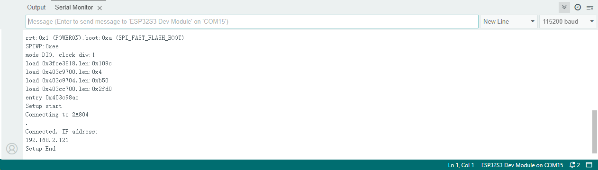
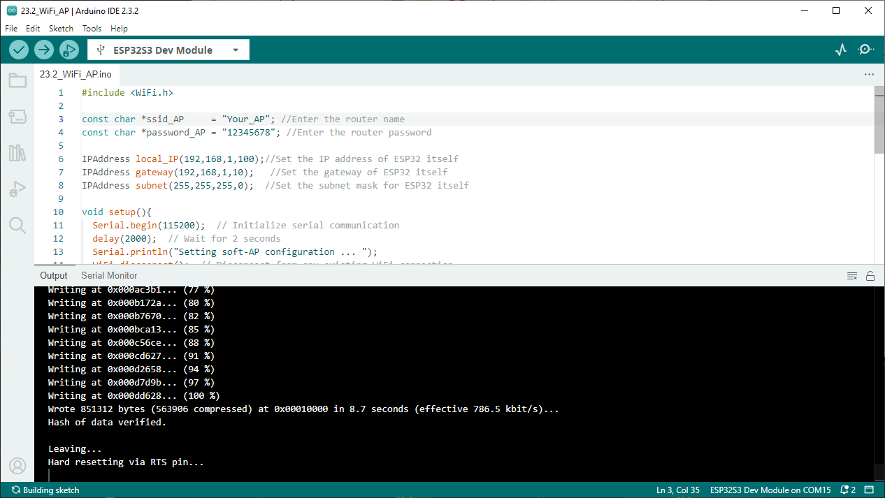
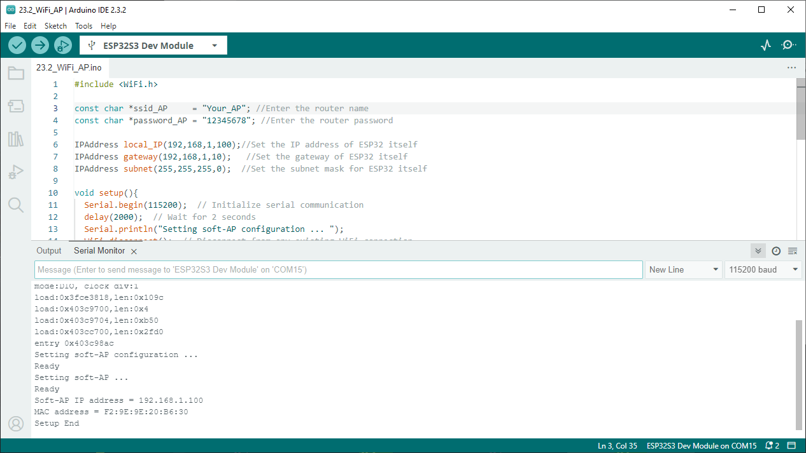
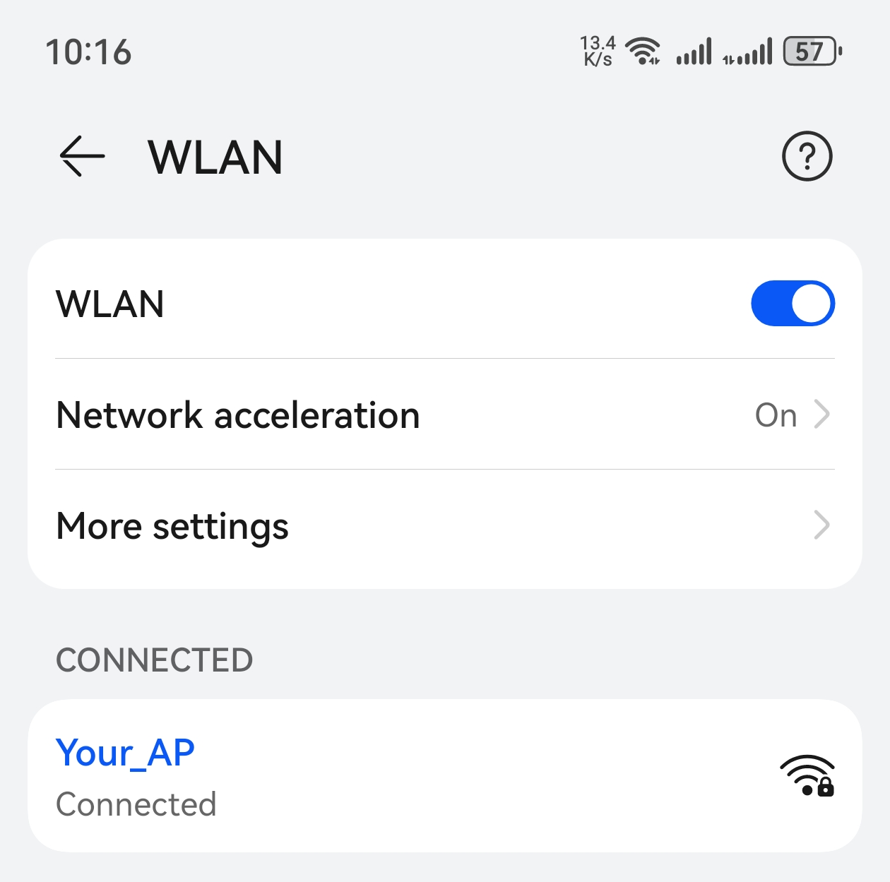
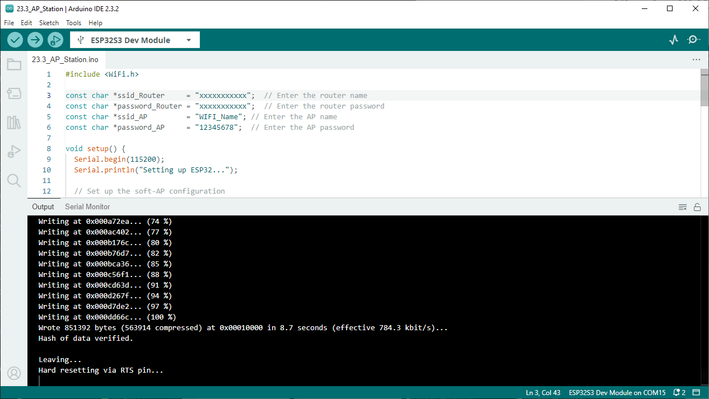
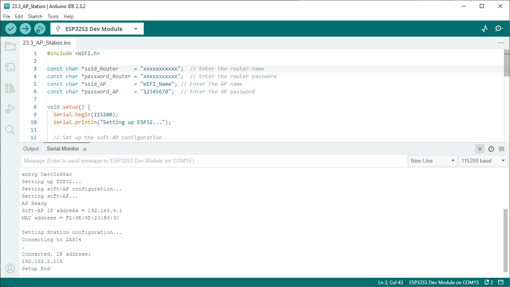
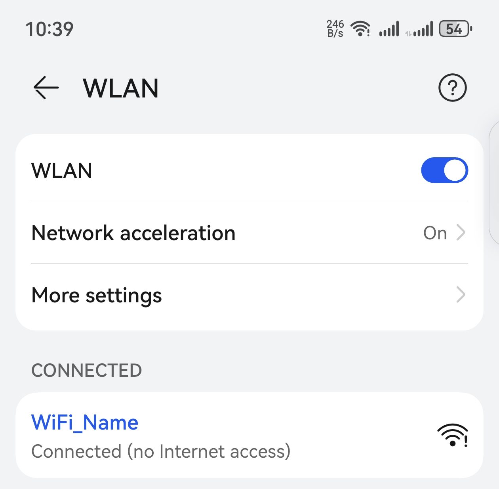

Chapter 23 WiFi Working Modes
In this chapter, we’ll focus on the WiFi infrastructure for ESP32-S3 WROOM. ESP3 2-S3 WROOM has 3 different WiFi operating modes: station mode, AP mode and AP+sta tion mode. All WiFi programming projects must be configured with WiFi operating m ode before using WiFi, otherwise WiFi cannot be used.
Project 23.1 Station mode
Component List
ESP32-S3-WROOM x1
Type C USB Cable x1
Connect
Connect ESP32-S3 to the computer using the USB cable.

Sketch
Sketch_23.1_Station_mode
Because the names and passwords of routers in various places are different, befo re the Sketch runs, users need to enter the correct router’s name and password i n the box as shown in the illustration above. After making sure the router name a nd password are entered correctly, compile and upload codes to ESP32S3 WROOM, op en serial monitor and set baud rate to 115200. And then it will display as follo ws:
Code
The following is the program code:
#include <WiFi.h>
const char *ssid_Router = "********"; //Enter the router name
const char *password_Router = "********"; //Enter the router password
void setup(){
Serial.begin(115200);
delay(2000);
Serial.println("Setup start");
WiFi.begin(ssid_Router, password_Router);
Serial.println(String("Connecting to ")+ssid_Router);
while (WiFi.status() != WL_CONNECTED){
delay(500);
Serial.print(".");
}
Serial.println("\nConnected, IP address: ");
Serial.println(WiFi.localIP());
Serial.println("Setup End");
}
void loop() {
}
Project 23.2 AP mode
Component List & Circuit
Component List & Circuit are the same as in Project 23.1.
Circuit
Connect ESP32-S3 to the computer using the USB cable.
Sketch
Before the Sketch runs, you can make any changes to the AP name and password for ESP32-S3 in the box as shown in the illustration above. Of course, you can leave it alone by default.
Compile and upload codes to ESP32-S3 WROOM, open the serial monitor and set the baud rate to 115200. And then it will display as follows.
When observing the print information of the serial monitor, turn on the WiFi scanning function of your phone, and you can see the ssid_AP on ESP32-S3, which is called “Your_AP” in this Sketch. You can enter the password “12345678” to connect it or change its AP name and password by modifying Sketch.
Code
The following is the program code:
#include <WiFi.h>
const char *ssid_AP = "Your_AP"; //Enter the router name
const char *password_AP = "12345678"; //Enter the router password
IPAddress local_IP(192,168,1,100);//Set the IP address of ESP32 itself
IPAddress gateway(192,168,1,10); //Set the gateway of ESP32 itself
IPAddress subnet(255,255,255,0); //Set the subnet mask for ESP32 itself
void setup(){
Serial.begin(115200); // Initialize serial communication
delay(2000); // Wait for 2 seconds
Serial.println("Setting soft-AP configuration ... ");
WiFi.disconnect(); // Disconnect from any existing WiFi connection
WiFi.mode(WIFI_AP); // Set WiFi mode to Access Point
// Configure the soft-AP with the specified IP, gateway, and subnet
Serial.println(WiFi.softAPConfig(local_IP, gateway, subnet) ? "Ready" : "Failed!");
Serial.println("Setting soft-AP ... ");
boolean result = WiFi.softAP(ssid_AP, password_AP); // Start the soft-AP
if(result){
Serial.println("Ready");
// Print the IP address and MAC address of the soft-AP
Serial.println(String("Soft-AP IP address = ") + WiFi.softAPIP().toString());
Serial.println(String("MAC address = ") + WiFi.softAPmacAddress().c_str());
}else{
Serial.println("Failed!");
}
Serial.println("Setup End");
}
void loop() {
// The loop is empty as this example only sets up the soft-AP
}
Project 23.3 AP+Station mode
Component List & Circuit
Component List & Circuit are the same as in Project 23.1.
Sketch
Sketch_23.3_AP_Station_mode
It is analogous to Project 23.1 and Project 23.2. Before running the Sketch, you need to modify ssid_Router, password_Router, ssid_AP and password_AP shown in the box of the illustration above.
After making sure that Sketch is modified correctly, compile and upload codes to ESP32-S3 WROOM, open serial monitor and set baud rate to 115200. And then it will display as follows:
When observing the print information of the serial monitor, turn on the WiFi scanning function of your phone, and you can see the ssid_AP on ESP32-S3.
Code
The following is the program code:
#include <WiFi.h>
const char *ssid_Router = "xxxxxxxxxxx"; // Enter the router name
const char *password_Router = "xxxxxxxxxxx"; // Enter the router password
const char *ssid_AP = "WIFI_Name"; // Enter the AP name
const char *password_AP = "12345678"; // Enter the AP password
void setup() {
Serial.begin(115200);
Serial.println("Setting up ESP32...");
// Set up the soft-AP configuration
Serial.println("Setting soft-AP configuration...");
WiFi.disconnect();
WiFi.mode(WIFI_AP_STA); // Set the mode to both AP and STA
Serial.println("Setting soft-AP...");
boolean apResult = WiFi.softAP(ssid_AP, password_AP);
if (apResult) {
Serial.println("AP Ready");
Serial.println(String("Soft-AP IP address = ") + WiFi.softAPIP().toString());
Serial.println(String("MAC address = ") + WiFi.softAPmacAddress().c_str());
} else {
Serial.println("AP Failed!");
}
// Set up the station configuration
Serial.println("\nSetting Station configuration...");
WiFi.begin(ssid_Router, password_Router);
Serial.println(String("Connecting to ") + ssid_Router);
while (WiFi.status() != WL_CONNECTED) {
delay(500);
Serial.print(".");
}
Serial.println("\nConnected, IP address: ");
Serial.println(WiFi.localIP());
Serial.println("Setup End");
}
void loop() {
// You can add code here to handle traffic between the AP and Station interfaces
}